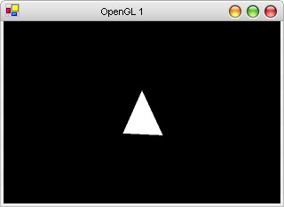

Ce bi radi nekega lepega dne (snake se ozre in pogleda skozi zapacano okno) izdelali nekaj tako dobrega, kot zmore le stric Carmack (in njemu ustrezni veleumi grafičnega programiranja), potem ste na pravi poti. Pred vami je prvi članek, ki vas bo naučil kako zaobvladati OpenGL. Poleg Direct3Dja eno najpopularnejših APIjev za delo z grafiko. No, s prvim člankom ga morda res ne boste zaobvladaii, bo pa to en lep in preprost uvod v delo s tem grafičnim APIjem.
Kaj pa je tako posebnega na vsem tem, porečete. Nič. Razen tega, da je celotna koda napisana v programskem jeziku C#. Zatorej je vse skupaj še dokaj novo.
Ker pa OpenGL v osnovi ni bil napisan za nič drugega kot C++, je bilo potrebno za ostale jezike narediti različne wrapperje, in/ali binde, ki moč OpenGLa dajo v roke tudi "tujcem" (Javi, C#u, Delphiju in še mnogo drugim).
To moč da C#-govorečim osebamTao framework(natančneje njegov OpenGL del (ter Platform del - da nam prihrani kakšno urico dela)), ki poleg OpenGLa (Glut, Gl, Glu) združuje še DevIl, SDL, OpenAL, našlo pa bi se še kaj. Vse to pa je na voljo za .NET in mono framework, kar pomeni, da boste isto kodo lahko uporabljali tako na Windowsih, kot Linuxih in Macih (in verjetno še kje).
Ker pa vem, da vas to brezplodno govoričenje utruja, se kar podajmo na to razburljivo potovanje.
Naj se potovanje prične!
Kot prvo vas bom napotil, da odprete svoj Visual Studio.NET in kot nov projekt izberete Windows Application (pod C#, seveda). Če niste ponosen lastnik VS.NET, vam žal ne morem pomagati s kakšnimi nasveti. Vendar pa naj vas pomirim, da se z dobro mero potrpežljivosti stvar brez težav usposobi tudi v kakšnem drugem IDEu.
Ko se pred vami pojavi lepa mala forma, je potrebno pod Reference vašega projekta dati nekaj Tao assemblyjev (če si frameworka še niste potegnili z interneta, je pravi čas, da to storite sedaj... ali pa pogledate na dno te noge in ustrezne dllje dobite tam). Malce se pomučite in kot reference dodajte Tao.OpenGL.dll in Tao.Platform.Windows.dll.
Ko je to mukotrpno delo za vami, je čas, da na vašo formo navlečete kontrolo, ki vam bo delo z OpenGLom olajšalo za nekako 2354%. Ta kontrola se imenuje SimpleOpenGlControl (huh!), nahaja pa se v Tao.Platform.Windows assemblyju. Kako pa do te kontrole? Preprosto! Odprite Toolbox in kliknite Add/Remove Items, nato pa med ponujenimi .net komponentami izberite SimpleOpenGlControl. Le-to potem dodate na formo kot vsako drugo kontrolo. Spreminjajte ji ime, počnite kar vas je volja... načeloma ne vsebuje hroščev :)
Tako, to smo storili. Sedaj pa je čas za programiranje.
It's show time!
Nekaj kode bo za nas ustvaril že Visual Studio sam. Med drugim tudi vključil nekaj imenskih prostorov.
Naj bolj zanimiv pa je vsekakor Tao.OpenGl. V njem se nahajajo trije razredi Gl Glu in Glut. Vsak z ogromnim številom metod, funkcij in konstant. Vsaka izmed njih pa ima seveda svoj namen.
Za nas bo zaenkrat uporaben samo razred Gl (oz. na dolgo - Tao.OpenGl.Gl), ki vsebuje OpenGl API klice funkcij in podobno "navlako", do verzije 1.5 (za neuke... to je zadnja verzija OpenGla). Kot dodatek pa podpira kar lepo število extensionov (kaj to je, boste morda izvedeli kdaj drugič).
using System;
using System.Drawing;
using System.Collections;
using System.ComponentModel;
using System.Windows.Forms;
using System.Data;
using Tao.OpenGl;
V MainForm razredu boste spoznali nekaj "standardnih" funkcij, ki so podobni tako v naših člankih, kot tudi v Doom3 pogonu (ne hecam se:P). Razlika je le v tem, da imajo tam kakšno drugo ime, ter da je tam jezik C++. Prav vsak pogon sestoji iz nekaj osnovnih korakov... Inicializacija, upodabljanje scene, posodabljanje scene in branje vhodnih podatkov. Vse to ima seveda tudi naš glavni razred.
Spodaj sledi nekaj nepotrebne navlake, ki jo bo (v večji meri) naredil kar Visual Studio sam.
namespace OpenGl1
{
#region MainForm
/// <summary>/// MainForm je nas glavni razred, v katerem bomo zaenkrat (zardi
/// preprostosti) opravljali vecino dela.Pocasi pa se mu bo
/// pridruzil se kaksen drug. /// </summary>publicclass MainForm : System.Windows.Forms.Form
{
// OglControl bo za nas olajsal kreiranje podrocja kamor bomo
// renderirali in ostalih kontekstov, ki sami po sebi zavzamejo
// clanek ali tri. Kar pa za nas niti ni bistveno, saj bi radi
// cim hitreje dosegli kaksen efekt.private Tao.Platform.Windows.SimpleOpenGlControl OglControl;
N A V L A K A
ki ni pomembna za ta članek
...
Končno pa se začne nekaj, kar ima kolikor toliko uporabno vrednost...
V Main funkcijo naše aplikacije bomo vstavili vso potrebno kodo, ki bo naš MainForm razred spravila v delovanje.
Show bo formo naredila vidno našim očem, nato pa jo bo prevzela funkcija Run, ki je nekakšna glavna zanka (več o tej funkciji si preberite spodaj).
#region Main
/// <summary>/// Nezanimivo :P/// Vse kar naredi je, da ustvari formo,
/// jo prikaze in zazene naso zanko./// </summary>
[STAThread]
staticvoid Main()
{
MainForm mainForm = new MainForm();
mainForm.Show();
mainForm.Run();
}
#endregion Main
Kot ste morda opazili, zelo rad kodo urejam v regione... vsekakor jo to naredi veliko bolj berljivo, v taksni kodi pa se tudi veliko lazje znajdete.
Spodnji region vsebuje vse memberje tega razreda. Torej vse spremenljivke.
Zaenkrat uporabljamo samo spremenljivko angle, s katero bomo vrteli trikotnik, ki smo se ga namenili izrisati.
#region Members
/// <summary>/// Spremenljivke, ki jih bomo uporabljali v aplikaciji./// </summary>// spremenljivka, ki jo bomo uporabili za vrtenje trikotnika.privatefloat angle = 0.0f;
#endregion Members
Funkcija Run, ki sem jo omenil zgoraj, pa izgleda nekako takole.
Nič posebnega. Zanka se izvaja toliko časa, dokler je naš program aktiven (dokler ga ne zapremo... ko ga zapremo, se Created nastavi na false).
V vsakem loopu pa se izvedejo trije ukazi:
Invalidate() - celotni (true) formi pošlje sporočilo, da se mora ponovno izrisati, kar našo OpenGl kontrolo prisili, da svojo vsebino izriše na ekran.
Draw() - Izriše novo slikico naše scene.
Applications.DoEvents() - Prebere sporočila. Če tega ne bi storili, bi naš loop zavzel celoten proces in aplikacija bi se obesila.
#region Run
/// <summary>/// Glavna zanka nase aplikacije./// </summary>privatevoid Run()
{
while (Created)
{
Invalidate(true);// Osvezi naso celotno formo (poslje
// Paint sporocilo, kar pripravi tudi// naso OpenGL kontrolo, da se osvezi)
Draw(); // Izrise sceno
// Poskrbi za vsa sporocila, ki so se morda nabrala
// med tem loopom (KeyDown, Close, Paint, Resize,...)
Application.DoEvents();
}
}
#endregion Run
Verjetno bo naslednji odsek za vas nekoliko bolj zanimiv, saj se v njem lotimo dejanskega risanja scene.
Verjetno so komentarji dovolj, a vas kljub temu ne bom prepustil na milost in nemilost kodi in še malce nakladal.
Za začetek zbrišemo color in depth bufferja, tako da začnemo risati na "nepopisan list".
z glLoadIdentiy nastavimo trenutno matriko (modelview matriko) v njeno originalno stanje (v koordinatno izhodišče).
Nato pa modelview matriko nastavimo tako, da bo vse, kar bomo risali, premaknjeno za 10 enot v ekran (pomnožimo jo z translacijsko matriko).
Ker smo zelo zahtevni, bi radi, da se naša scena tudi vrti. Zato nastavimo tudi rotacijsko matriko. Le-ta bo zavrtela našo sceno za določen kot (spremenljivka angle) okrog vektorja (0, 1, 0) (torej okrog Y osi). Kot angle nato poveča za 0.1, ter ga (če je večji od 360°) nastavi nazaj na 0).
Z nastavitvami matrik smo tako opravili. Če vas skrbi, da glede njih nič ne razumete, nič skrbeti... imate google :) Ali pa me poiščite na forumu, ali IRCu (IRCnet, #slogamedev)... če pa bo sreča mila, lahko kaj izveste iz katerega izmed člankov, ki jih bom spisal (ako me bo volja!).
#region Draw
// <summary>// Glavno izrisovanje.// </summary>privatevoid Draw()
{
// Izbrise color in depth buffer.
Gl.glClear(Gl.GL_COLOR_BUFFER_BIT | Gl.GL_DEPTH_BUFFER_BIT);
// Trenutno matriko pomnozi z Identity matriko, kar naso sceno
// postavi v koordinatno izhodisce.
Gl.glLoadIdentity();
// Pomnozi trenutno transformacijsko matriko s translacijsko
// matriko... povedano po domace... vse kar se bo renderiralo
// od tu naprej, bo premaknjeno za 10 enot v ekran.
Gl.glTranslatef(0,0,-10);
// Nastavi translacijsko matriko
// Sceno zavrti za kot "angle" okrog osi, ki jo opise vektor
// (0,1,0) v nasem primeru se bo zavrtelo okrog Y osi.
Gl.glRotatef(angle, 0,1,0);
angle +=0.1f; // povecamo kotif(angle>360.0f) // ce je kot vecji od 360°
angle = 0.0f; // ga nastavimo na nic.
No, dovolj govoričenja... Hočemo kaj videti!
Za to pa bo poskrbelo naslednjih nekaj vrstic vrstic.
S prvo bomo OpenGLu povedali, da bomo v naslednjih nekaj korakih risali posamezne trikotnike.
Seveda se trikotniki ne bodo naredili kar sami, saj ne vejo kje!
OpenGL zato od nas pričakuje, da mu podamo koordinate ogljišč trikotnika. To pa storimo z naslednjimi tremi klici funkcije glVertex3f.
Ko menimo, da smo OpenGLu poslali dovolj podatkov o trikotniku (ali več trikotnikih), zaključimo pošiljanje koordinat s klicem glEnd.
// Sedaj pa bomo OpenGLu povedali, da bomo zaceli z risanjem// Izrisati pa zelimo posamezne trikotnike (GL_TRIANGLES)
Gl.glBegin(Gl.GL_TRIANGLES);
Gl.glVertex3f(-1, -1, 0); // Koordinate prvega ogljisca.
Gl.glVertex3f(1, -1, 0); // - || - drugega - || -
Gl.glVertex3f(0, 1, 0); // - || - tretjega - || -/// Z posiljanjem koordinat OpenGLu smo koncali... glEnd
Gl.glEnd();
// Izvrsi vse OpenGL ukaze in s tem spravi vsebino,
// ki jo zelimo izrisati, na ekran.
Gl.glFlush();
}
#endregion Draw
Še ena izmed pomembnih funkcij je funkcija Resize.
Nje niti ne bomo spreminjali tako pogosto, vendar pa je prav tako pomembna, saj pove kam (v kateri del okna) in kako se bo vse skupaj risalo.
z glViewport povemo v kateri del okna bomo risali. V našem primeru želimo, da se izrisuje kar čez celotno površino okna.
Z naslednjim klicem pa kot trenutno matriko izberemo projekcijsko matriko. To storimo zato, da OpenGLu povemo, da bi radi izvajali operacije na njej.
Najprej jo resetiramo. Nato pa nastavimo perspektivno projekcijo.
Prvi parameter je tako imenovani Field of View (FOV), ki pove, kakšen kot bo imelo naše vidno polje v Y smeri.
Drugi parameter je Aspect ratio, ki pove kot našega polja v X smeri.
Tretji in četrti parameter pa sta Near in Far clipping plane, ki povesta kje bodo naši objekti "odrezani" in se jih ne bo več videlo (poskusite... če nastavite Z koordinate trikotnika na 500, trikotnika ne boste več videli).
Nato kot trenutno matriko izberemo modelview matriko, v katero bomo tudi risali (oz. natančneje... na njej se bodo izvalaje vse nadaljne transformacije).
#region Resize
/// <summary>/// Spreminjanje velikosti OpenGL okna na novo velikost./// </summary>privatenewvoid Resize(int pWidth, int pHeight)
{
// Nastavi del okna v katerega bomo risali.
Gl.glViewport(0, 0, OglControl.Width, OglControl.Height);
// Kot aktivno matriko izbere projekcijsko matriko.
Gl.glMatrixMode(Gl.GL_PROJECTION);
// Matriko resetira (pomnozi jo z identity matriko).
Gl.glLoadIdentity();
// Nastavi perspektivno projekcijo.
Glu.gluPerspective(45,
((double) OglControl.Width /(double) OglControl.Height),
0.1, 500);
// Kot trenutno matriko izbere modelview matriko.
Gl.glMatrixMode(Gl.GL_MODELVIEW);
// Resetira modelview matriko.
Gl.glLoadIdentity();
}
#endregion Resize
Funkcija Initialize se bo izvedla ob samem zagonu programa (ob klicu metode OnLoad, ki tukaj ni prikazana, saj ni pomembna za članek).
Ob inicializaciji se nastavi naša OpenGL kontrola (ta klic bo za nas ustvaril "okence" na naši formi, kamor bomo nato risali). Le-ta namesto nas nastavi vse potrebne nastavitve kontekstov, raznoraznih parametrov, ki jih je za kar veliko vrstic (poglejte si kakšen C++ OpenGL tutorial (brez GLUT)).
Nato pa se pokliče še OnResize (ki kliče funkcijo Resize), ki nastavi naš viewport in perspektivno projekcijo.
#region Initialize
/// <summary>/// Nekaj klicev nastavitev, ki se izvedejo ob zagonu programa./// </summary>privatevoid Initialize()
{
// Nastavi SimpleOpenGLControl
OglControl.InitializeContexts();
// Nastavi velikost viewportov in
//perspektivno projekcijo nasega okna.
OnResize(null);
}
#endregion Initialize
...
#region Overrides & Handlers
...
Še nekaj funkcij, ki niso tako pomembne, da bi našle mesto v
HTML članku. So pa seveda v priloženi izvorni kodi.
OnLoad
OnResize
OnKeyDown#endregion Overrides
}
#endregion MainForm
}
To bi bilo za prvi članek OpenGL+C# naveze vse.
No, vse bi bilo, če ste dosegli vsaj približno tak efekt: ;)

Upam, da se je snake potrudil dovolj in za vas napisal nekaj malega osnov tega priljubljenega APIja v navezi z odličnim jezikom C#. Hkrati pa upam, da vam je bil članek všeč. Svoje predloge pa lahko izrazite v ustrezni temi na slogamedev.net forumih, ali pa me poiščete na IRCu, kjer sem še kar aktiven na kanalu #slogamedev na IRCnet-u.
Izvorna koda programa [klik]